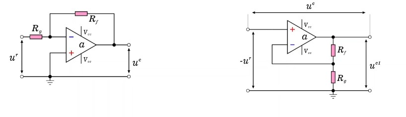
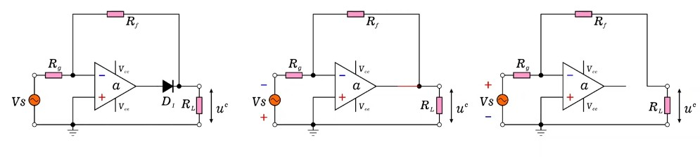
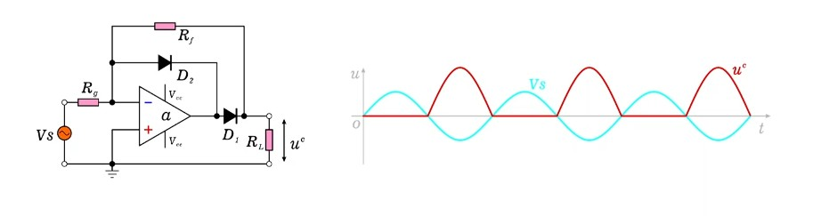
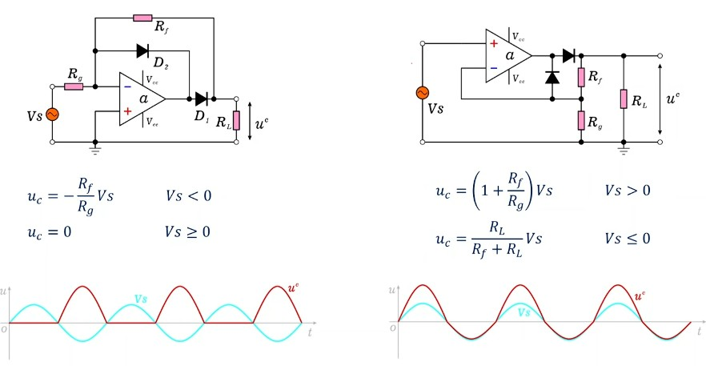

第一章 运放基础回顾
在深入精密整流器之前，我们必须先夯实运放电路分析的基础。精密整流器的巧妙之处，恰恰建立在运放两条最基本法则之上。本章将系统回顾这些前置知识，并揭示反相放大器与同相放大器之间令人惊叹的统一性。
1.1 理想运放两大黄金法则
理想运算放大器的分析建立在两条基本法则之上，这两条法则是所有运放电路分析的出发点，也是理解精密整流器工作原理的关键基石。无论电路拓扑如何复杂，只要运放工作在线性区，这两条法则始终成立。
法则二：虚断（Virtual Open） —— 运放两输入端电流为零，即 $I_+ = I_- = 0$。
虚短的物理含义：运放具有极高的开环增益 $A$（通常 $10^5 \sim 10^7$），输出电压 $V_{out} = A(V_+ - V_-)$。在负反馈条件下，运放会自动调节输出，使得 $V_+ - V_- \approx 0$。换句话说，运放"拼命"让两个输入端电压趋于一致，就像一根无形的导线将它们短接——但并非真正的物理短接，因此称为"虚短"。
虚断的物理含义：运放输入阻抗极高（理想情况下为无穷大），输入端几乎不取电流。因此，外接电路的信号电流不会流入运放输入端，两个输入端等效于断开——但信号仍可通过反馈网络传递，因此称为"虚断"。
1.2 反相与同相放大器结构
反相放大器和同相放大器是运放最基础的两种负反馈拓扑。表面上看，它们的增益公式不同、输出极性不同，似乎是完全不同的电路。然而，当我们深入审视它们的网络拓扑时，会发现一个惊人的事实：两者的网络结构完全相同，仅仅是电压参考点（即"地"的位置）不同。
反相放大器
- 输入信号加在反相端（经 $R_g$）
- 同相端接地
- 增益：$A_v = -\dfrac{R_f}{R_g}$
- 输出与输入反相
同相放大器
- 输入信号加在同相端
- 反相端经 $R_g$ 接地
- 增益：$A_v = 1 + \dfrac{R_f}{R_g}$
- 输出与输入同相

仔细观察上图可以发现：两个电路的元件完全相同——都有运放、反馈电阻 $R_f$、接地电阻 $R_g$，连接方式也一样（$R_f$ 从输出连到反相端，$R_g$ 从反相端连到地或信号源）。唯一的区别在于：信号从哪里输入，地接在哪里。这正是参考点不同的体现。
1.3 参考点转换分析法
参考点转换分析法是一种强大的电路分析视角：通过改变电压参考点（等效于移动"地"的位置），可以将反相放大器问题转化为同相放大器问题来求解，反之亦然。这种方法不仅提供了新的分析角度，更深刻地揭示了两者的本质统一性。
转换步骤
以下分八步完成从反相放大器到同相放大器的参考点转换：
- 确定原始参考点：反相放大器中，参考点（地）在同相输入端，输入信号 $u_r$ 从反相端经 $R_g$ 输入。
- 移动参考点：将地线从同相输入端移至反馈电阻 $R_g$ 处，以 $R_g$ 处为新参考零点。此时原输入信号 $u_r$ 相对于新参考点的极性发生翻转，变为 $-u_r$——因为原电路中 $u_r$ 是从 $R_g$ 指向同相端，而新参考点在 $R_g$ 处。
- 识别等效结构：移动参考点后，电路变为：输出端经反馈电阻 $R_f$ 接反相输入端，反相输入端经 $R_g$ 接地，信号 $-u_r$ 加在同相输入端——这正是标准同相放大器的拓扑。
- 写出中间结果：对等效同相放大器应用标准增益公式，得到输出端相对于新参考点（$R_g$ 处）的电压 $u_{C1}$：
$$u_{C1} = \left(1 + \frac{R_f}{R_g}\right) \times (-u_r)$$
- 建立变量关系：将步骤 4 的结果赋予明确含义——$u_{C1}$ 是运放输出端相对于新参考点（$R_g$ 处）的电压，记作 $u_{ce}$。而我们真正要求的是反相放大器的输出电压 $U_C$，它定义为输出端相对于原始参考点（同相输入端）的电压。
- 应用基尔霍夫电压定律（KVL）：以原始参考点（同相输入端）为基准，输出端电压 $U_C$ 等于输出端相对于 $R_g$ 处的电压 $u_{ce}$，再加上 $R_g$ 处相对于同相端的电压。由于 $u_r$ 从 $R_g$ 指向同相端，因此 $R_g$ 处相对于同相端为 $+u_r$，即：
$$U_C = u_{ce} + u_r$$
- 代数合并：代入前两步结果：
\begin{aligned} U_C &= u_{ce} + u_r \\ &= \left(1 + \frac{R_f}{R_g}\right)(-u_r) + u_r \\ &= -u_r - \frac{R_f}{R_g}u_r + u_r \\ &= -\frac{R_f}{R_g} \times u_r \end{aligned}
- 得出最终结论：这与直接用反相放大器增益公式 $u_{C} = -\frac{R_f}{R_g} \times u_r$ 得到的结果完全一致！因此，反相放大器和同相放大器网络结构完全相同，仅是电压参考点不同——反相放大器的参考点是同相输入端，同相放大器的参考点是 $R_g$ 处。用同相放大器讨论的电路特性，其结论可直接应用于反相放大器上。
这一结论不仅提供了电路分析的便利（可以选择自己更熟悉的角度求解），更深刻地揭示了两者本质上的统一性——它们是同一网络在不同参考系下的两种表现形式。
第二章 半波整流基础
整流是模拟电路中最基本的功能之一，也是交流-直流转换的核心环节。本章从交流与直流的基本概念出发，逐步建立半波整流器的完整知识框架，并深入分析二极管正向压降带来的根本性限制——正是这一限制，推动了精密整流器的诞生。
2.1 交流信号与直流信号
在电路理论中，电信号按照电流方向的变化特征，可分为交流信号与直流信号两大类。理解两者的本质区别，是掌握整流概念的前提。
| 特征 | 交流信号（AC） | 直流信号（DC） |
|---|---|---|
| 电流方向 | 周期性变化，双向交替 | 恒定不变，单向流动 |
| 典型波形 | 正弦波、方波、三角波等 | 稳恒直线、脉动波形 |
| 数学表达 | $u(t) = U_m \sin(\omega t)$ | $u(t) = U_0$（稳恒）或 $u(t) = U_m|\sin(\omega t)|$（脉动） |
| 核心区分 | 方向是否变化是区分交流与直流的核心特征 | |
2.2 整流的概念与物理本质
定义
整流（Rectification）是将交流信号转换为直流信号的过程。更本质地说，整流是利用电子元件的单向导通特性，限制或改变电流方向，使其保持单一流向。
分类
- 半波整流：仅保留输入信号的一个极性半周期（正半周或负半周），丢弃另一半周期。输出为单极性脉动信号。
- 全波整流：将输入信号的负半周期"翻转"到正方向，使正负半周期均被利用。输出频率加倍，脉动更小。
实现原理
整流的核心依赖于电子元件的单向导通特性。二极管是最常用的整流元件——正向偏置时导通（低阻抗），反向偏置时截止（高阻抗），天然具有"电流单向阀"的功能。正是这种非线性的伏安特性，使二极管成为整流电路的基础构件。
2.3 二极管半波整流器
基本结构
最简单的半波整流器由一个二极管串联在交流信号源与负载 $R_L$ 之间构成。电路结构极为简洁，但功能明确：只允许一个方向的电流通过负载。
工作过程
- 正半周（$V_S > 0$）：二极管正向偏置导通，电流经二极管流过负载 $R_L$，输出电压 $V_{out} \approx V_S$。
- 负半周（$V_S < 0$）：二极管反向偏置截止，负载中无电流，输出电压 $V_{out} = 0$。
- 输出波形：仅保留正半周的"馒头波"，负半周被完全切除。
2.4 二极管正向压降详解
理想二极管模型假设正向导通时压降为零，但实际硅二极管在导通时存在约 0.7V 的固定正向压降（锗管约 0.3V，肖特基二极管约 0.2V~0.4V）。这一压降是半导体 PN 结的物理特性所决定的，与二极管的尺寸、功率额定值无关。
对整流波形的影响
由于正向压降的存在，整流后的输出波形并不是简单地将负半周"切零"，而是整个正半周信号下移了 0.7V。这意味着：
- 输入信号幅值低于 0.7V 的部分，输出为零（二极管未导通）
- 输入信号峰值 $V_m$ 的输出峰值仅为 $V_m - 0.7$
- 输出波形在过零点附近出现 0.7V 的"死区"
温度特性（拓展）
二极管正向压降具有负温度系数，约为 $-2\text{mV}/°C$。这意味着温度升高时压降减小，温度降低时压降增大。在精密整流应用中，这一温度漂移会导致输出随环境温度变化，是重要的误差来源之一。精密整流器通过运放反馈消除压降影响，同时也从根本上消除了温度漂移问题。
2.5 半波整流器的局限性
普通二极管半波整流器虽然结构简单，但存在三个根本性的缺陷，严重限制了其在精密应用中的使用。
| 缺陷 | 具体表现 | 影响程度 |
|---|---|---|
| 效率低下 | 仅利用输入信号的 50% 能量（丢弃整个负半周） | 理论最大效率仅 40.6% |
| 压降误差 | 硅管 0.7V 固定压降造成信号失真，且压降值存在器件离散性 | 对大信号影响小，对小信号致命 |
| 小信号失效 | 信号幅值 < 0.7V 时完全无法整流 | 100μV 信号 → 输出恒为零 |
正是小信号失效这一根本性限制，催生了精密整流器的诞生。精密整流器的核心思想是：利用运放的超高增益来"补偿"二极管压降，使得等效压降趋近于零，从而实现对任意微弱信号的整流。
第三章 精密半波整流器
本章是整篇笔记的核心。我们将从问题出发，经历"朴素方案→发现问题→改进方案→完善电路"的完整设计思维过程，逐步推导出精密半波整流器的完整电路。这一过程不仅让我们理解电路的"是什么"，更让我们理解"为什么这样设计"——这才是真正的工程设计能力。
3.1 弱信号整流困境
当输入信号幅值远小于二极管压降（如 100μV 信号面对 0.7V 压降）时，普通二极管整流器完全失效。这不是"精度差"的问题，而是完全无法工作——输出恒为零。
解决这一困境的核心思路是利用运放的高增益来补偿二极管压降。具体而言，将二极管置于运放的反馈回路中，运放误差校正的能力取决于环路增益（Loop Gain）——即开环增益 $A_{OL}$ 与闭环增益 $A_{CL}$ 的比值。输出端的等效二极管压降为：
其中 $V_D$ 为二极管正向压降（约 0.7V），$A_{OL}$ 为运放开环增益（典型值 $10^5 \sim 10^6$），$A_{CL}$ 为电路闭环增益。环路增益 $A_{OL}/A_{CL}$ 越大，等效压降就越小。以 $A_{CL}=1$（电压跟随器）为例，等效压降为 $0.7\text{V} \times \frac{1}{10^5} = 7\mu\text{V}$，几乎为零！这就是"精密"整流器名称的由来——它消除了二极管压降对整流精度的影响。
3.2 朴素方案及其问题
初始方案
最直觉的做法：在反相放大器的输出端串联一个二极管 $D_1$。期望二极管在负输入时导通（构成反相放大），正输入时截止（输出为零）。

工作分析
分析二极管 $D_1$ 的导通与截止时，需要注意负载电阻 $R_L$ 是接地的，因此二极管阴极的初始电位为 0V——这是判断 $D_1$ 能否导通的关键参考。
负输入（$V_S < 0$）：运放输出正电压，二极管 $D_1$ 正向导通，电路构成标准反相放大器，输出 $V_{out} = -\frac{R_f}{R_g} V_S > 0$。这部分工作正常。
正输入（$V_S > 0$）：运放输出负电压试图使 $D_1$ 截止。但此时运放处于开环状态（负反馈环路被二极管断开），运放作为比较器工作，输出达到负饱和电压（如 $-13$V）。问题在于：输入信号 $V_S$ 仍然通过电阻网络 $R_g$ 和 $R_L$ 直通负载，输出电压为：
这意味着正半周输出不为零，不符合整流要求！整流器要求正半周输出精确为零，但朴素方案中正半周信号经电阻分压后"泄漏"到了输出端。
3.3 辅助二极管改进方案
朴素方案的根本问题在于：正半周时反相端失去反馈通路，虚短被破坏。解决思路很直接——增加一条反馈通路，使得正半周时反相端仍然被"管住"。
改进方法
在运放输出端与反相输入端之间增加一个辅助二极管 $D_2$（方向与 $D_1$ 相反），为正半周提供反馈通路。

数学分析
正半周时，$D_2$ 导通，运放输出经 $D_2$ 连接到反相端，负反馈环路闭合。我们可以写出两个方程：
- 输出电压关系（考虑 $D_2$ 压降）：
- 运放方程：
联立求解：由运放方程得 $u_+ - u_- = u_{out}/A$。由于 $A$ 极大（$10^5$ 以上），$u_{out}/A \approx 0$，因此 $u_+ \approx u_-$。又因同相端接地 $u_+ = 0$，所以 $u_- \approx 0$。代入输出电压关系得 $u_{out} \approx -0.7$V。
注意：运放输出端电压约为 $-0.7$V（驱动 $D_2$ 导通），但这个电压被 $D_1$ 阻隔，不会出现在负载端。负载端看到的是精确的 0V——这正是精密整流的关键！
3.4 完整精密半波整流器
将主整流二极管 $D_1$ 和辅助钳位二极管 $D_2$ 结合，就构成了完整的精密半波整流器电路。这个电路巧妙地利用了两个二极管的互补工作，在不同半周分别提供整流通路和钳位通路。
完整工作状态
| 输入条件 | $D_1$ 状态 | $D_2$ 状态 | 运放工作模式 | 输出电压 |
|---|---|---|---|---|
| $V_S < 0$（负半周） | 导通 | 截止 | 反相放大器（负反馈经 $D_1$ 闭合） | $V_{out} = -\dfrac{R_f}{R_g} V_S$ |
| $V_S \geq 0$（正半周） | 截止 | 导通 | 负反馈经 $D_2$ 闭合，虚短维持 | $V_{out} = 0$（精确零输出） |
性能优势
- 消除压降影响：二极管 0.7V 压降被环路增益 $A_{OL}/A_{CL}$ "稀释"为 $V_D \cdot A_{CL}/A_{OL} \approx 7\mu\text{V}$，等效压降几乎为零。
- 处理微弱信号：可整流幅值远小于 0.7V 的信号（低至微伏级），突破普通整流器的死区限制。
- 边缘陡峭：过渡区极窄（由运放增益和压摆率决定），输出波形接近理想整流。
- 温度稳定性：消除二极管压降的同时也消除了温度漂移问题。
交互仿真
调整下方滑块，观察不同增益和输入幅值下的整流效果：
3.5 同相结构为何不可行
既然反相放大器和同相放大器本质等效（仅参考点不同），一个自然的问题是：能否用同相放大器结构构建精密整流器？答案是不可以，原因在于同相结构在负半周存在根本性缺陷。

工作分析
- 正半周（$V_S > 0$，上正下负）：$D_1$ 导通，构成标准同相放大器，输出 $V_{out} = (1 + \frac{R_f}{R_g}) V_S$。工作正常，与反相结构对应半周的逻辑一致。
- 负半周（$V_S < 0$，上负下正）：运放输出负电压，$D_1$ 截止、$D_2$ 导通。$D_2$ 导通后构成反馈回路——运放输出端经 $D_2$ 直接连到反相输入端，此时电路等效为电压跟随器。因此 $u_+ = u_- = V_S$。由于 $D_1$ 已截止切断主输出路径，信号只能经 $R_f$ 和 $R_L$ 分压到达负载：
反相结构（可行）
- 正半周：$D_2$ 钳位，反相端=0V，输出=0V
- 负半周：$D_1$ 导通，反相放大，输出=$-\frac{R_f}{R_g}V_S$
- 两个半周均可控
同相结构（不可行）
- 正半周：同相放大，输出=$(1+\frac{R_f}{R_g})V_S$
- 负半周：分压泄漏，输出=$\frac{R_L}{R_f+R_L}V_S \neq 0$
- 负半周无法归零
第四章 深入分析与拓展
掌握精密半波整流器的基本原理只是起点。作为一个高级硬件工程师，还需要理解其在实际工程中的频率限制、误差来源、以及如何从半波扩展到全波整流。本章将对这些进阶主题进行深入分析。
4.1 传递函数与工作区域
精密半波整流器的传递函数具有分段线性的特征，可用一个统一表达式描述两个工作区域：
这一传递函数清晰地展现了电路的非线性本质：对负输入呈现线性增益，对正输入则完全截止。值得注意的是，虽然电路包含非线性元件（二极管），但在每个工作区域内，输入-输出关系都是线性的——这正是运放反馈的精妙之处。
从传输特性曲线可以看出，理想情况下过零点处是锐利的转折。但在实际电路中，转折区域受运放增益和压摆率影响，存在极窄的过渡带（通常在微伏量级），远小于普通整流器的 0.7V 死区。
4.2 频率响应与带宽限制
精密整流器虽然消除了二极管压降问题，但并非完美无缺。在较高频率下，运放的带宽和压摆率成为新的性能瓶颈。
运放压摆率限制
当输入信号从正半周切换到负半周（或反过来）时，运放需要从一个输出状态快速切换到另一个状态。具体来说，正半周时运放输出约为 $-0.7$V（驱动 $D_2$），切换到负半周时需要跳变到 $+\frac{R_f}{R_g}|V_S| + 0.7$V（驱动 $D_1$ 导通）。这一跳变需要运放输出摆动约 $0.7 + 0.7 + \frac{R_f}{R_g}|V_S|$ 的电压。
运放的压摆率（Slew Rate, SR）限制了这一跳变的速度。跳变所需时间约为：
通用运放（如 LM358，SR = 0.5V/μs）在高频信号下会出现明显的切换延迟，导致输出波形在过零点附近出现"毛刺"或畸变。高速运放（如 AD8056，SR = 300V/μs）则可大幅缓解此问题。
增益带宽积限制
运放的增益带宽积（GBW）决定了在给定闭环增益下的可用带宽。对于精密整流器，有效闭环增益为 $1 + R_f/R_g$（同相放大器视角），可用带宽约为：
4.3 实际误差来源分析
尽管理论上精密整流器可以消除二极管压降的影响，但实际电路中仍存在多种误差来源，高级工程师需要对此有全面的认识。
| 误差来源 | 典型量级 | 影响机制 | 缓解措施 |
|---|---|---|---|
| 运放输入失调电压 $V_{OS}$ | 0.1~5mV | 使过零点偏移，小信号整流失真 | 选用低失调运放（如 OP07、OPA333） |
| 运放输入偏置电流 $I_B$ | pA~nA | 在 $R_g$、$R_f$ 上产生额外压降 | 选用 FET 输入运放或匹配电阻 |
| 运放开环增益有限 | $A_{OL} \approx 10^5$ | 等效压降 $V_D \cdot A_{CL}/A_{OL} \approx 7\mu$V | 选用高增益运放 |
| 二极管反向漏电流 $I_R$ | nA~μA | 截止半周信号泄漏 | 选用低漏流二极管 |
| 二极管结电容 $C_j$ | 1~10pF | 高频信号耦合泄漏 | 选用低结电容开关二极管 |
| 电阻精度与温漂 | 1%~0.1% | 增益误差和温度漂移 | 选用精密金属膜电阻 |
4.4 精密全波整流前瞻
半波整流仅利用了输入信号 50% 的能量，这在许多应用中是不可接受的。全波整流将负半周"翻转"到正方向，使信号能量得到充分利用。下面介绍两种常见的精密全波整流方案。
方案一：运放加法器组合
将精密半波整流器的输出与原始输入信号通过加法器叠加，可实现全波整流。其数学原理为：
通过适当选择电阻比例，使得负半周的输出恰好等于正半周的输出，即可实现 $|V_S|$ 的全波整流。这种方案需要两个运放（一个整流、一个求和），电路较复杂但原理清晰。
方案二：绝对值电路
绝对值电路（Absolute Value Circuit）是精密全波整流器的经典实现。它利用两个运放和精密匹配的电阻网络，输出始终等于输入的绝对值 $|V_S|$。该电路对电阻匹配精度要求极高（通常需要 0.1% 精度），否则在过零点附近会出现"尖峰"或"死区"。
4.5 典型应用场景
精密整流器在实际工程中有广泛的应用，以下是几个典型场景：
| 应用领域 | 具体用途 | 为何需要精密整流 |
|---|---|---|
| 音频信号处理 | 音频电平检测、VU 表驱动 | 音频信号幅值可低至 mV 级，普通整流器无法处理 |
| 传感器信号调理 | 热电偶、应变片等微弱交流信号的整流 | 传感器输出常为 μV~mV 级，远低于二极管压降 |
| 交流电压/电流测量 | 数字万用表中的 AC-DC 转换 | 需要高精度转换，误差需在 0.1% 以内 |
| 锁相放大器 | 微弱信号的相敏检测 | 信号常淹没在噪声中，需精密整流提取 |
| 射频功率检测 | 射频信号的包络检波 | 高频小信号需要低失真整流 |
第五章 知识总结与自测
本章将前述所有知识进行系统化总结，并通过常见误区辨析和自测题，帮助你检验和巩固对精密半波整流器的理解深度。
5.1 核心知识点速查
| 知识点 | 核心内容 | 考试重点/易混淆点 | 难度 |
|---|---|---|---|
| 虚短与虚断 | 运放两输入端电压相等（$V_+ = V_-$），电流为零（$I_+ = I_- = 0$）。仅在负反馈线性区成立。 | 运放饱和时虚短失效；断开反馈时虚短失效 | ★★ |
| 反相/同相放大器统一性 | 两者网络结构相同，仅电压参考点不同。通过参考点转换可互推增益公式。 | 参考点选择影响分析方式：反相 $A_v = -R_f/R_g$，同相 $A_v = 1+R_f/R_g$ | ★★ |
| 整流基本概念 | 将交流（方向变化）转换为直流（方向恒定）。半波仅保留单极性，效率低且有压降误差。 | 脉动直流方向不变仍属直流；区分标准是方向而非幅值 | ★★ |
| 二极管压降问题 | 硅管约 0.7V，造成信号失真、小信号失效、温度漂移。温度系数约 $-2\text{mV}/°C$。 | 压降测量用垂直方向而非视觉距离；死区电压限制了微弱信号处理 | ★★ |
| 精密整流核心原理 | 二极管置于运放反馈回路，等效压降降为 $V_D \cdot A_{CL}/A_{OL}$（约 7μV），消除死区和温度漂移。 | 理解"补偿"机制：运放自动调整输出使二极管恰好导通 | ★★★ |
| $D_1$ 与 $D_2$ 的角色 | $D_1$ 主整流（负半周导通），$D_2$ 钳位（正半周导通将反相端钳至 0V）。 | 正半周：$D_2$ 导通→反相端=0V→输出=0V；负半周：$D_1$ 导通→反相放大 | ★★★ |
| 同相结构不可行 | 负半周输出 $V_{out} = \frac{R_L}{R_f+R_L}V_S \neq 0$，分压效应使信号无法归零。 | 关键差异：反相结构负半周增益可控，同相结构因分压无法归零 | ★★★ |
| 频率限制 | 压摆率限制切换速度，GBW 限制线性区带宽，二极管结电容导致高频泄漏。 | 高频设计需选高速运放+低结电容二极管 | ★★★★ |
| 全波整流前瞻 | 加法器组合法或绝对值电路法，需精密匹配电阻。 | 半波是全波的基础；电阻匹配精度决定过零点质量 | ★★★★ |
5.2 常见误区辨析
虚短是运放通过负反馈动态维持的近似等电位状态，而非物理短接。一旦反馈环路断开（如二极管截止且无辅助通路），虚短即刻失效。在精密整流器中，正半周时 $D_2$ 的作用正是维持反馈通路、保持虚短。
虽然等效压降趋近于零，但二极管仍有重要作用：(1) 二极管的反向漏电流会影响截止半周的隔离度；(2) 结电容在高频时提供泄漏通路；(3) 二极管开关速度影响切换过渡时间。选型时仍需关注这些参数。
精密整流器的"精密"是相对于普通整流器而言的。实际精度受运放失调电压、偏置电流、有限增益等因素限制。对于 μV 级信号，运放失调电压可能成为主导误差源，需要选择低失调运放并考虑调零。
增益大小不是选择标准。同相结构在负半周存在信号泄漏的根本缺陷（输出 $\neq 0$），无法满足整流的基本要求。精密整流器的核心是"一个半周精确放大，另一个半周精确归零"，只有反相结构能同时满足这两个条件。